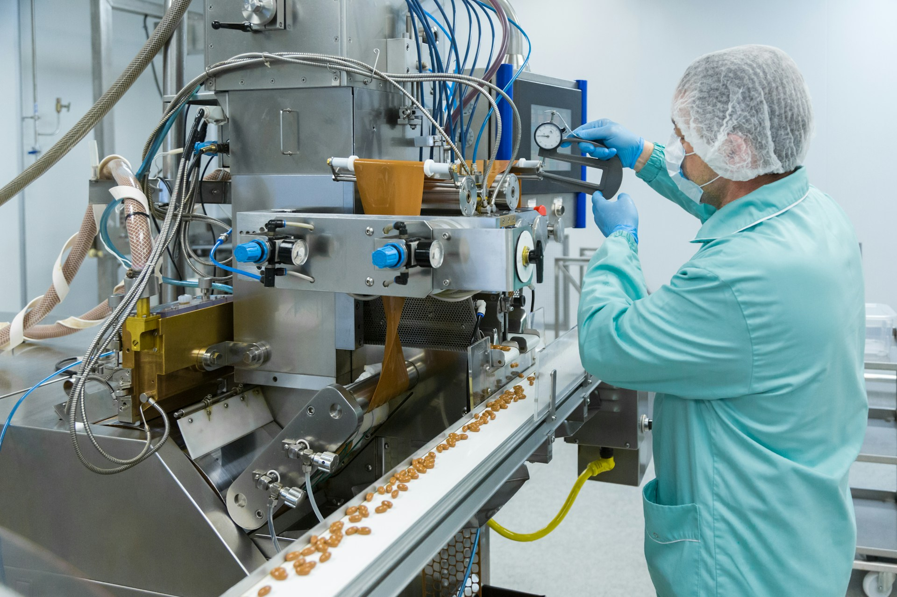

How people and agents put Orient to work.
Orient is a meaning system for organisations — it helps people and AI systems work from the same understanding: what is true, what is supported, what is contested, what has been decided, and what remains open. Here is what that looks like in practice.
One meaning system. Two kinds of work.
Together they form a shared meaning operating system: humans create the meaning, machines consume and operationalise it.
A thinking and communicating space for teams.
People capture knowledge, resolve questions, create frames, communicate clearly, and measure understanding.
A meaning layer for agents and enterprise AI.
Machines get structured access to the organisation's living understanding, so they reason, generate, brief, coordinate, and act with context.
Turn scattered material into meaning that holds.
A knowledge base stores information. Orient helps teams think with it — asking what is true, what is supported, what is contested, what we have decided, and what still needs explaining.
Team thinking space
One calm space to think through strategy, product, a customer problem or a board question — instead of scattering it across Slack, docs, decks and email.
Capturing knowledge & sources
Bring in documents, research, transcripts, feedback and links. Orient turns them into usable context — extracting themes, surfacing contradictions, connecting sources to questions.
Resolving important questions
Move from raw material to a considered position — supported by evidence, with the uncertainty and weak spots made visible.
Creating frames
Turn understanding into something communicable: a presentation, explainer, memo, briefing, podcast, training module or Q&A space.
Strategy & leadership alignment
Capture the evidence behind strategic choices, record decisions and track what is still open — especially when strategy isn't yet simple or settled.
Product & roadmap reasoning
Connect feedback, evidence and strategy so the team understands why something is being built — not just that it's a ticket.
Sales enablement & positioning
Keep sales aligned with the company's current truth: accurate positioning, live proof points, objection handling and approved claims.
Internal communication
Explain complex change clearly — and anticipate the confusion and objections before they spread.
Learning & comprehension
Measure whether people actually understood — see where knowledge landed, where it failed to propagate, and who is still confused.
Board & investor preparation
Resolve the narrative, surface weak assumptions, generate board frames and prepare the likely Q&A.
Research & insight synthesis
Turn large bodies of material into structured understanding — themes, contradictions, missing evidence and unresolved probes.
Organisational memory
Remember not just documents but meaning: why a decision was made, what evidence mattered, what was uncertain, and what remains unresolved.
"The work was never the hard part. Keeping everyone — and now every agent — working from the same understanding was. That's what Orient gives us."
Structured meaning agents can act on.
Agents need more than documents. They need to know what is true, supported, contested, decided, outdated — and what they are allowed to say.
Agent grounding
Give agents the current organisational context before they act — the answer, the evidence, the confidence level, and what not to say.
Decision memory
Tell agents why decisions were made — rationale, evidence, rejected alternatives, owner, and the conditions to revisit them.
Open probes as work queues
Expose unresolved questions as structured work agents can investigate — then route proposed answers back to humans for judgement.
Machine-readable company truth
A current, queryable version of what the company believes — positioning, pricing, roadmap, claims and decision boundaries.
Approved claims & safe generation
Ground generated content in approved meaning, so output isn't just fluent — it's organisationally safe.
Search beyond documents
Return understanding, not ten files: the current logic, the supporting evidence, the live objections, and what can be said externally.
Workflow automation with context
Give automations semantic context, so they act from meaning — related risks, prior accounts, affected frames — not just event data.
Agent-to-human briefing
Surface what changed, what resolved, which probes remain open, where comprehension is weak, and which narratives are drifting.
Comprehension-aware agents
Know not just what was communicated but what was understood — and generate clearer explanations where understanding failed.
Narrative & communication agents
Generate decks, memos, updates and customer answers grounded in the company's current understanding — aligned, not generic.
Multi-agent coordination
Give every agent a shared meaning layer, so sales, product, support and research don't fork into competing versions of the truth.
Meaning APIs for enterprise AI
Expose resolved answers, probes, frames, decisions, evidence and confidence through APIs — so Orient sits beneath many AI surfaces.
Human judgement in. Machine action out. Shared understanding between them.
Humans capture knowledge and resolve questions. Orient structures the meaning and remembers the reasoning. Machines consume it to brief, generate, coordinate and act — then surface new probes for humans to judge.
The strongest value is the loop.
Humans provide judgement. Machines consume, extend, test and act on it. These are the systems that emerge when both use Orient together.
Strategy operating system
Leadership captures sources, debates options, resolves key questions, and communicates the direction.
Agents generate briefings, answer employee questions, detect narrative drift, and surface unresolved probes.
Product launch system
Product and leadership decide positioning, create launch frames, and answer the key questions.
Agents generate sales enablement, support answers, customer explanations, internal Q&A and launch briefings.
Board preparation & follow-through
Founders and executives create the board narrative, resolve key questions, identify risks and prepare Q&A.
Agents track actions, update decision memory, monitor unresolved assumptions and prepare follow-up briefings.
Sales alignment system
Leadership, sales, product and marketing resolve current positioning, proof points, objections and narratives.
Sales agents generate proposals, call prep, objection handling, follow-up emails and account narratives.
Research-to-action system
Researchers and analysts capture sources, resolve findings and decide what matters.
Agents summarise new material, identify contradictions, propose probes, generate frames and brief stakeholders.
Where Orient fits across the organisation.
Humans use Orient to think, decide, frame and communicate. Their agents turn that work into context, enablement and clarity.
Leadership
Think, decide, frame and communicate — while leadership agents brief, monitor, coordinate and surface risk.
Product
Reason from evidence — while product agents turn it into roadmap context, enablement and customer-facing clarity.
Sales
Align around positioning and proof — while sales agents generate accurate, current, approved commercial material.
Customer Success & Support
Understand issues and promises — while support agents answer safely and escalate intelligently.
Marketing & Communications
Frame the company clearly — while comms agents generate aligned, on-message narratives.
Research & Strategy
Investigate uncertainty — while research agents structure, test and extend the work.
People, Learning & Enablement
Teach important material — while learning agents target explanations and measure comprehension.
Where Orient fits best.
Orient is most valuable where knowledge is complex, decisions are consequential, and communication matters.


See Orient on your work.
One meaning system beneath your team and its agents — a resolved source of what's true, decided and safe to act on. Request access to the platform.